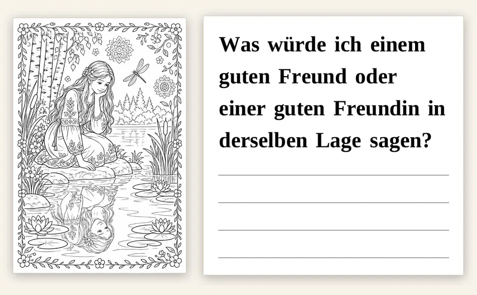

Selbstwert: Ich bin es mir selbst Wert
Wie du freundlicher und fairer mit dir umgehst, egal ob du 15 bist oder 50.
Öffnet amazon.de in einem neuen Tab.
Du würdest so nie mit deiner besten Freundin reden. Warum dann mit dir?
„Typisch. Alle haben es gemerkt.“ „So kannst du nicht rausgehen.“ Kennst du diese Stimme im Kopf? Ein bisschen Selbstkritik ist normal und sogar nützlich. Schwierig wird es, wenn sie nicht mehr über das spricht, was du getan hast, sondern über das, was du bist. Selbstliebe heißt dabei nicht, dass du dich toll finden musst. Gemeint ist etwas Nüchternes: Du gehst mit dir so um, wie du mit einem Menschen umgehen würdest, der dir wichtig ist. Das Buch erklärt das so, dass du es im Alltag umsetzen kannst, ob du 15 bist oder 50. Es ist ein Ratgeber mit Übungen, keine Therapie.

Blick ins Buch
Blick ins Taschenbuch: Arbeitsseite und Ausmalbild aus Kapitel eins
Sechs Kapitel mit je vier Unterkapiteln führen von Selbstkritik, dem Vergleich mit anderen und Perfektionismus über Selbstakzeptanz und Selbstliebe bis zu Beziehungen, Beruf und schweren Zeiten. Jedes Unterkapitel hat ein Beispiel aus dem Alltag und endet mit einer Übung. Im Taschenbuch folgt nach jedem Unterkapitel eine Arbeitsseite mit Fragen und Platz für deine Antworten, und am Ende jedes Kapitels wartet ein Ausmalbild. Beim Ausmalen kommst du zur Ruhe, und oft sortieren sich die Gedanken dabei von allein. Im Anhang stehen Beispiele für positive Affirmationen, die Quellen und Anlaufstellen, wenn es dir schlecht geht.
Vier Übungen aus dem Buch für deinen Alltag
Vom harten zum fairen Satz
Nimm einen harten Satz, den du oft zu dir sagst, und formuliere einen fairen Satz, den du dir glauben kannst. Er muss nicht positiv sein, nur fair. Taucht der harte Satz wieder auf, sag dir innerlich den fairen.
Was wäre gut genug?
Such dir eine Aufgabe aus, die gerade ansteht, und schreib in einem Satz auf, was hier gut genug wäre. Mach sie bis zu diesem Punkt und hör dann bewusst auf. Beobachte, ob jemand den Unterschied merkt und wie du dich fühlst.
Deine Stärken sammeln
Schreib fünf Dinge auf, die du gut kannst. Es dürfen kleine Dinge sein. Notier zu jeder Stärke eine Situation, in der sie sich gezeigt hat. Frag dann zwei Menschen, was sie an dir schätzen, hör zu, ohne abzuwinken, und sag einfach: „Danke.“
Klein anfangen mit Nein
Denk an eine Situation, in der du Ja gesagt hast, obwohl du Nein meintest, und schreib auf, was du stattdessen hättest sagen können. Such dir dann eine kleine Gelegenheit, Nein zu sagen, und achte darauf, wie der andere tatsächlich reagiert.
Dieses Buch ist ein Ratgeber und kein Ersatz für eine Therapie oder Beratung. Wenn es dir gerade richtig schlecht geht, hol dir bitte Hilfe, zum Beispiel bei der Telefonseelsorge unter 0800 111 0 111 (kostenlos, rund um die Uhr).
Öffnet amazon.de in einem neuen Tab.
Passt auch dazu


Mehr zum Thema Persönlichkeitsentwicklung
 In 30 Tagen zur emphatischeren Persönlichkeit30 Tage lang jeden Tag ein Beispiel aus dem Alltag und eine kurze Übung, um Empathie zu üben.
In 30 Tagen zur emphatischeren Persönlichkeit30 Tage lang jeden Tag ein Beispiel aus dem Alltag und eine kurze Übung, um Empathie zu üben. In 30 Tagen weg vom eigenen NarzissmusEigene narzisstische Züge erkennen und ändern: 30 Tage, jeden Tag ein Thema und eine Aufgabe.
In 30 Tagen weg vom eigenen NarzissmusEigene narzisstische Züge erkennen und ändern: 30 Tage, jeden Tag ein Thema und eine Aufgabe. Positiv, die Kraft positiver GedankenWie du Gedanken wie „Das schaffe ich eh nicht“ bemerkst, prüfst und durch fairere ersetzt.
Positiv, die Kraft positiver GedankenWie du Gedanken wie „Das schaffe ich eh nicht“ bemerkst, prüfst und durch fairere ersetzt.